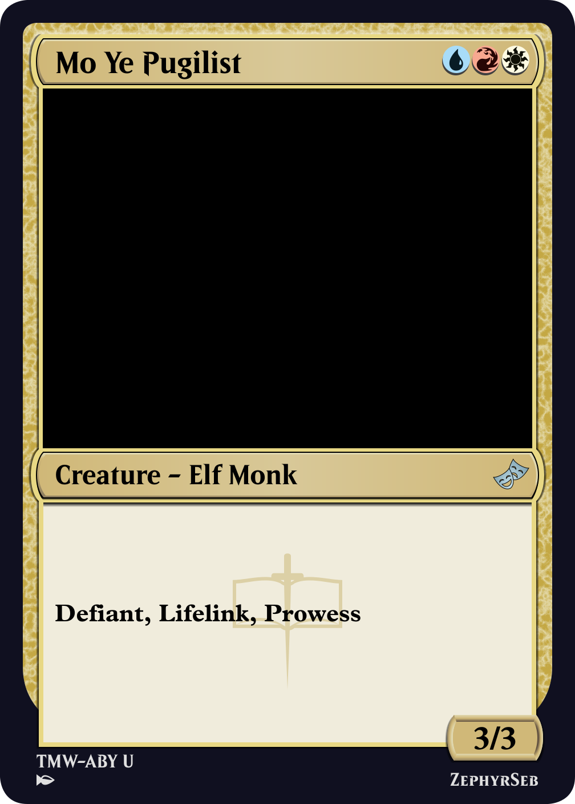
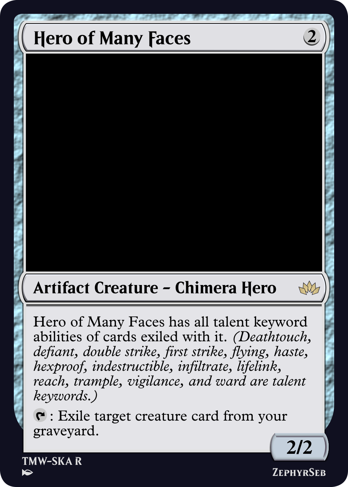
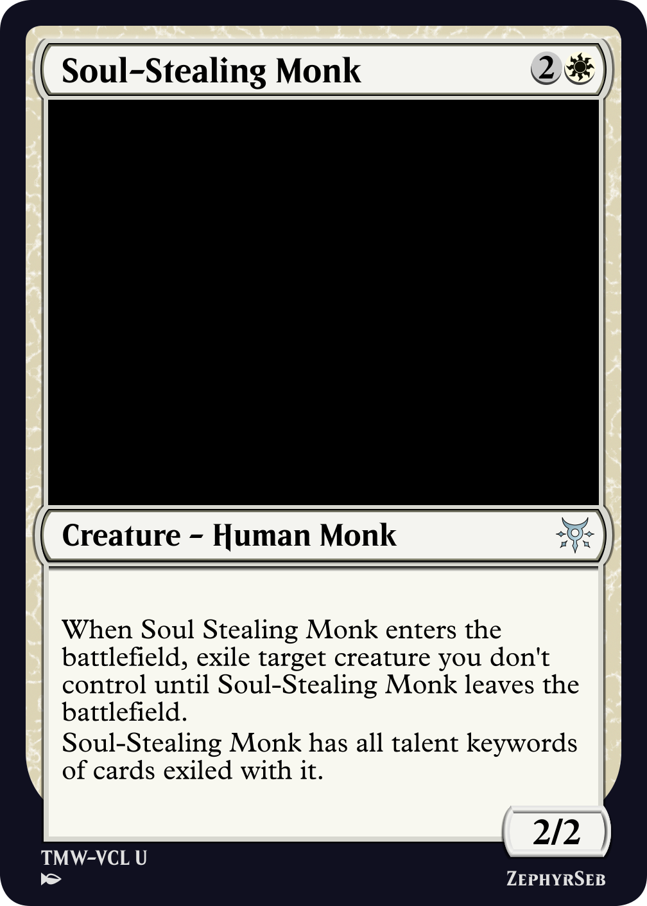

Mo Ye Pugilist
When designing mechanics, there are a number of types that mechanics fall into:
• Ability words are the italicized groupings that bring together a common theme, such as landfall, alliance, or spellbind.
• Keyword actions are verbs that instruct a player or permanent to do a specific thing, such as scry, sacrifice, or photosynthesize.
• Keyword abilities are everything else, encompassing passive, activated, and triggered abilities, as well as alternate and additional costs that are applied when casting a spell. I tend to put keyword abilities in bold, though this isn't standard practice.
A few cards on this website have started to refer to 'talent keywords'. Today I'm going to explain what these are and why we have a new distinction.

Hero of Many Faces
A talent keyword is a keyword ability that is either a passive or triggered ability that appears on permanents. This includes many evergreen keywords like lifelink, trample, and menace, as well as set-specific keywords such as infiltrate or illusory. You can find the full list here.
Activated abilities, like equip or crew, aren't talents, since this could cause unexpected problems based on how we use the talent keyword designation (we'll talk about why that's relevant below).

Crystalline Giant
Occasionally, cards appear in Magic that care about 'keyword soup' - that is, they usually grant themselves or others a list of keywords based on the keywords of other cards. This is very wordy, and usually only hits evergreen keywords along with the occasional set specific keyword. We can group these as 'talents' to clear up a decent amount of text. We can then refer to this grouping on such cards, giving access to a wider variety of keywords. In particular, for parasitic keywords that only have a select few cards, such as outflank and overgrow, this gives the mechanic more cards to work with. This can also give a new home to 'french vanilla' creatures; creatures whose text box consists entirely of a list of mechanics.
Conversely, we can have effects that remove talent keywords. Some effects in the game may hate on specific keywords, such as flying, but a creature with horsemanship is much more difficult to deal with. Grouping them together, but not calling them out individually, allows us to have versatile hate cards that can prevent weird interactions in combat. These can also remove future iterations of the flying mechanic that may have yet to be printed. Certain keywords, like defender and illusory, might be beneficial for you to remove from your own creatures too.

Soul-Stealing Monk
Above, we discussed what is and isn't a talent keyword. As you can see, if we allowed activated abilties to be talents, granting soul-stealing monk equip would lead to some very confusing interactions - a non-aura, non-equipment card can't be attached to a creature, so granting equip wouldn't do anything. The ability could still be activated, however. From a design perspective, removing all talent keywords from an equipment would render it useless, which could prove to be unintentionally more powerful than the design was meant to be. Many activated abilities (resurrect, cycling, etc) are also activated from other zones, and so giving them to a permanent makes no sense.
Until next time, may you gain the talents you want.
ZephyrSeb